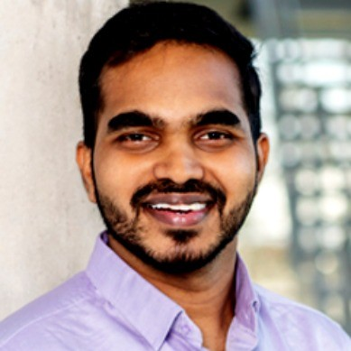

Quantum Simulations Lead
Leading quantum simulations at Fraunhofer IAO. I bridge theoretical quantum computing with practical implementations on real hardware.

Bridging the gap between quantum theory and real-world applications, from near-term NISQ devices to fault-tolerant algorithms.
Neural Quantum States hold immense potential to reshape quantum simulation. As classical ML architectures like transformers and RBMs prove increasingly capable of representing complex quantum states, NQS is positioned to claim significant territory from traditional quantum computing—not just breakfast, but a substantial portion of lunch as well.
The key to efficient quantum simulation lies in the compilation of block encoding methods. By developing optimized variational Block-Encoding protocols combined with quantum signal processing, we're working toward resource-efficient Hamiltonian simulation that could unlock practical quantum advantage.
Quantum-centric supercomputing presents fascinating opportunities, particularly when combined with subspace methods. Our current focus is on the singlet fission problem—a compelling use case where near-term quantum hardware can provide meaningful insights into complex molecular dynamics.
Leading a team of 7 researchers developing quantum algorithms for industrial applications. Bridging theoretical quantum computing with practical implementations on real hardware.
Thesis: "Ultrafast Spin Dynamics in Molecular Magnets". Developed theoretical methodology for quantum logic operations in molecular magnets.
Focus on Material Science and DFT studies. Published 5 conference papers on thermoelectric materials and ultrafast spectroscopy.
Open to research collaborations and discussions on quantum computing.